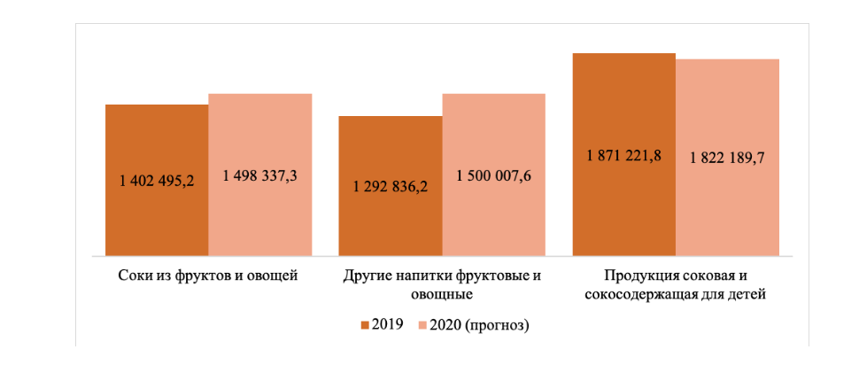

и мы являемся крупнешими производителями сока в России.
Наш сок производится изсключительно из натуральных продуктов.
Спасибо что выбрали именно нас.
В дальнешем планируется продавать сок за территорией РФ.
Сок популярен практически во всех странах мира. Наиболее распространены соки, выжатые из съедобных плодов доброкачественных, спелых фруктов и овощей.
Однако существуют соки, полученные из стеблей, корней, листьев различных употребляемых в пищу трав
(например, сок из стеблей сельдерея, сок из стеблей сахарного тростника).
С точки зрения потребителей, соки традиционно делят на три вида:
1)свежевыжатый (свежеотжатый) сок. Сок, который производят в присутствии потребителей с помощью ручной или механической обработки плодов или других частей растений;
2)сок прямого отжима. Это сок, изготовленный из доброкачественных спелых фруктов и овощей, прошедший пастеризацию и разлитый в асептические пакеты или стеклянную тару.
3)восстановленный сок. Это сок, произведённый из концентрированного сока и питьевой воды, который поступает в продажу в асептической упаковке.
